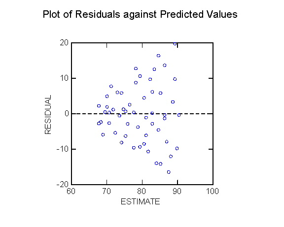
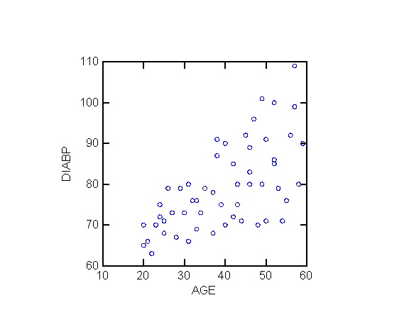
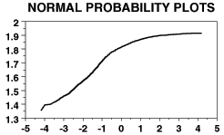
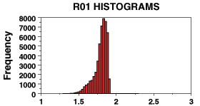

| Name: | _______________________________
K E Y |
| Student ID: | _______________________________ |
MATH108 10FA Final B
[ answers in web view ]
Total points: 150
Let the words of my mouth and the meditation of my heart
Be acceptable in Your sight, O LORD, my Rock and my Redeemer.
-- Psalm 19:14
- Please show all your work! No partial credit will be given for
incorrect answers with no work shown.
- Please draw a box around your final answer.
- You are only permitted to use your own calculator and writing implements.
Cell phones should be muted and left in your pocket or bag.
- All relevant tables are attached to the back. You may detach them for your
reference.
- Assume α = 0.05 everywhere unless indicated otherwise.
- For t-tests on two groups, if the df is not given, you may use the
conservative estimate of df = min(n1, n2) - 1.
-
Human beta-endorphin (HBE) is a hormone secreted by the pituitary gland under
conditions of stress (like exams!). Suppose we wish to determine whether
blood concentration of HBE (pg/mL) is higher for a group of men
jogging as compared to a group of men resting.
- Name the variable(s) which need to be measured, indicate their
levels of measurement, and whether each is a predictor or outcome variable.
[2]
[Jogging: predictor, categorical/dichotomous.
HBE: outcome, continuous]
- State the null and alternate hypotheses, both in words and in
appropriate notation. Which statistical test(s) would be appropriate?
[3]
[H0: μjog ≤ μrest:
HBE levels are not higher when jogging.
HA: μjog > μrest:
HBE levels are higher when jogging.
t-test on independent groups, or Wilcoxon-Mann-Whitney. ]
- Data for this experiment are given below. Sketch boxplots
for the data, on a common axis (number line). [4]
| Mean: | SD: |
|---|
| Jogging: |
60 | 58 | 62 | 49 |
51 | 58 | 54 |
56 | 4.7958 |
|---|
| Resting: |
41 | 37 | 51 | 60 |
28 | 35 | |
42 | 11.6276 |
|---|
- Run an appropriate parametric test and bracket
the p-value. [5]
[ SE1 = 1.8127, SE2 = 4.7469, SE = 5.0812.
mean diff = 14, so t = 2.755.
df = min(n1, n2) - 1 = 5 (real df = 6.45).
One-tailed: 0.02 < p < 0.05 (real p = 0.007). ]
- State the conclusion from this test, and interpret
it in the context of the original research question. [2]
[ p < α: reject H0,
HBE levels are higher for men who are jogging. ]
- Using the same data, perform an appropriate non-parametric
test and bracket the p-value. [4]
[ WMW: K1 = 35, K2 = 7.
n = 7, n' = 6: bracket 1-tailed p. ]
- State the conclusion from this test, and interpret
it in the context of the original research question. [2]
[ p < α: reject H0,
HBE levels are higher for men who are jogging. ]
- Which test do you think is more appropriate for this data,
the parametric or the non-parametric test? Why? [2]
[ Non-parametric: data are not normal, and SDs are not the same
(violates assumption of homogeneity of variance). ]
-
Does HBE concentration in men increase after they exercise?
Data from a study of 6 men are below.
| Mean | SD |
|---|
| Before: |
42 | 58 | 38 |
50 | 49 | 48 |
47.5 | 6.921 |
|---|
| After: |
47 | 57 | 44 |
53 | 49 | 53 |
50.5 | 4.722 |
|---|
- Name the variable(s) which need to be measured, indicate their
levels of measurement, and whether each is a predictor or outcome variable.
[2]
[ Time (before vs. after): categorical/dichotomous (paired).
HBE (pg/mL): continuous. ]
- State the null and alternate hypotheses, both in words and in
appropriate notation. Which statistical test(s) would be appropriate?
[3]
[ H0: μd ≤ 0
(presuming d = after - before; you could also subtract in the other order),
HBE concentration does not increase after exercise.
HA: μd > 0,
HBE concentration does increase after exercise.
Paired data: t-test on pairwise differences, or sign test. ]
- Run an appropriate parametric test and bracket the
p-value. [5]
[ mean diff = 3.00, SD of diffs = 2.898,
SEd = 1.183, so t = 2.535.
df = 5: one-tailed: 0.02 < p < 0.05 (real p = 0.026). ]
- State the conclusion from this test, and interpret
it in the context of the original research question. [2]
[ Reject H0,
HBE concentration rises after exercise. ]
- Using the same data, perform an appropriate non-parametric
test and bracket the p-value. [3]
[ Sign test: N+ = 4, N- = 1, nd = 6
bracket 1-tailed p. ]
- State the conclusion from this test, and interpret
it in the context of the original research question. [2]
[ Fail to reject H0, insufficient evidence to show
HBE concentration rises after exercise. ]
- Which test do you think is more appropriate for this data,
the parametric or the non-parametric test? Why? [2]
[ Pairwise differences are not very normal: skewed to left.
Sign test might be the better option in this case, although
overall the sample size is too small to tell. ]
-
Indicate the level of measurement for each of the following variables
as categorical (G), ordinal (O), discrete (D), or continuous (C).
[6]
- Location of injury: e.g., knee, lower back, shoulder, chest, etc. Categorical
- Number of correct answers on a multiple-choice test Discrete
- Number of children in a family, coded as 0, 1, 2, or "at least 3" Ordinal
- Blood glucose level (mg/dLi) Continuous
- Whether a woman is pregnant or not Categorical
- Strength of family bonds, rated as "Very Strong", "Somewhat Strong", "Weak", or
"Very Weak" Ordinal
-
Suppose that in a study half of the participants are nurses and
80% of the participants consider their jobs to be high-stress.
Consider the probability that a participant in the study is a nurse
who considers his/her job to be high-stress.
- What is the minimum possible value for this probability?
Draw a Venn diagram illustrating this situation. [3]
[30%. Everybody is either a nurse or high-stress (or both).]
- What is the maximum possible value for this probability?
Draw a Venn diagram illustrating this situation. [3]
[50%. Nurses are a subset of high-stress:
the circle representing nurses lies completely within
the circle representing high-stress; all the nurses are high-stress.]
-
Below is a residual plot for a linear regression model relating
blood pressure to age
(data from
UNC SOCI709 course). From this plot, is there evidence to indicate
that any of the assumptions of regression may have been violated?
Sketch a possible scatterplot of blood pressure versus age that
would reflect this residual plot.
(Hint: generally, blood pressure increases with age.) [5]

[ heteroscedasticity (non-homogeneity of variance).]

- In a study of Canadian nurses, say that 70% of the nurses work in
hospitals, and one quarter of the nurses habitually smoke.
20% of all the nurses in the study are smokers who work in hospitals.
- For each of the three probabilities given (70%, 25%, 20%),
express the probability in notation (e.g., P(smoke)) and draw a
Venn diagram, shading in the relevant region
(draw three separate Venn diagrams). [3]
[P(hospital) = 70%, P(smoke) = 25%, P(hospital and smoke) = 20%.
The last one is the intersection.]
- In this study, what is the chance that a nurse working in a
hospital smokes? [3]
[P(smoke|hospital) = P(hospital and smoke) / P(hospital) = 20%/70% = 28.6%.]
- In this study, is working in a hospital independent
of smoking? Why or why not? [3]
[No, P(smoke|hospital) = 28.6% ≠ 25% = P(smoke), so they
are not independent. Nurses who work in hospital are more likely to smoke.]
-
Does income level (low, middle, high) have an impact on
caloric intake (calories per day)?
- Name the variable(s) which need to be measured, indicate their
levels of measurement, and whether each is a predictor or outcome variable.
[2]
[ Income: predictor, ordinal or categorical.
Caloric intake: outcome, continuous. ]
- What is the appropriate parametric statistical test to run?
[1]
[ ANOVA ]
- State the null and alternate hypotheses, both in words and in
notation. [2]
[ H0: μL = μM
= μH,
i.e., average caloric intake is same for all income levels.
HA: μL ≠ μM,
or μL ≠ μH,
or μM ≠ μH;
i.e., at least one income group has different caloric intake.
Income does have an effect on caloric intake. ]
- Data for this experiment are given below. Run an appropriate
test and bracket the p-value. [5]
| Low-income: | 1200 | 1800 | 2400 |
|---|
| Middle-income: | 1200 | 1350 | |
|---|
| High-income: | 2100 | 2200 | |
|---|
[ Grand mean = 1750, group means = 1800, 1275, 2150.
SSb = 778750, SSw = 736250, dfb = 2, dfw = 4, so MSb = 389375, MSw = 184062.5.
F = 2.12, at df = (2,4), so omnibus p > .20 ]
- State the conclusion from this test, and interpret
it in the context of the original research question. [2]
[ Fail to reject H0,
insufficient evidence to show income affects caloric intake. ]
- What are the assumptions of the statistical test you
performed? Is there evidence to suggest that any of these
assumptions have been violated in this dataset? [3]
[ Parametricity: (1) DV is continuous or discrete (ok)
(2) Random sample: independent observations, independent groups (ok)
(3) Normal distribution of DV within each group (awfully small
sample size, so can't really tell, but no obvious outliers)
(4) Equality (homogeneity) of variance (dispersion) amongst groups
(no, spread in low-income is larger than in other groups). ]
-
In a study of BC nurses, an analysis was run to determine whether which
nursing school the nurse graduated from had an impact on salary.
- What are the variables which need to be measured for each individual?
For each variable, indicate its level of measurement and whether it is
a predictor or outcome variable. [2]
[ School: predictor, categorical. Salary: outcome, continuous. ]
- What is the appropriate parametric statistical test to run?
[1]
[ ANOVA ]
- State the null and alternate hypotheses, both in words and in
appropriate notation. [3]
[ H0: the average salaries for all BC schools are the same,
μ1 = μ2 = μ3 = ....
HA: some BC schools produce average salaries that are
different: μ1 ≠ μ2 or
μ1 ≠ μ3 or ... ]
- The data were collected and an appropriate analysis run, obtaining
a p-value of 0.07. State the conclusion of the analysis,
and interpret it in the context of the original research question. [2]
[ Fail to reject H0; there is insufficient evidence to
show that the school from which a nurse graduates has an impact on
salary. ]
- The p-value was 0.07. What does this number '0.07'
mean, in the context of the research question? 0.07 of what? [3]
[ There is a 7% chance of making a Type I error; i.e.,
if we reject H0 (claiming that not all BC schools produce
the same salary), then there is a 7% chance that in fact all the BC
schools do produce the same salary. ]
-
The average number of hours of exercise per week was measured for a number of
urban dwellers and rural dwellers.
A 95% confidence interval for the difference of means (urban - rural)
is (-0.27, 1.23). Based on this information, indicate whether each of the
following statements is "True" or "False".
(Please write the entire word, "True" or "False".) [6]
- Urban dwellers exercise an average of between 0.27 hrs less
and 1.23 hrs more per week than rural dwellers.
- 95% of urban dwellers exercise between 0.27 hrs less and 1.23 hrs more
per week than rural dwellers.
- We are 95% certain that urban dwellers exercise between 0.27 hrs less
and 1.23 hrs more per week than rural dwellers.
- With 95% confidence, the difference in hrs/week of exercise between
urban and rural dwellers in this study is between -0.27 and 1.23.
- At a 5% level of significance, this study is unable to find a
difference in amount of exercise between urban and rural dwellers.
- There is no difference in the amount of exercise for urban and rural
dwellers.
-
For BC nurses, is being married independent of working
over 60 hours/week?
The number of participants in each category is listed in the table below.
| | Married | Not Married |
|---|
| ≤ 60hrs | 150 | 80 |
|---|
| > 60hrs | 90 | 80 |
|---|
- What is the population of interest? [1]
[ BC Nurses ]
- Name the variable(s) which need to be measured, indicate their
levels of measurement, and whether each is a predictor or outcome variable.
[2]
[ Marital status: categorical/dichotomous.
Working hours: categorical/dichotomous. ]
- State the null and alternate hypotheses, both in words and in
appropriate notation. Which statistical test(s) would be appropriate?
[3]
[ H0: P(Mar|>60) = P(Mar|≤60) (= P(Mar)),
or equivalently, P(>60|Mar) = P(>60|not Mar) (= P(>60)):
whether a nurse is married is independent
of whether that nurse works over 60 hrs/week.
HA: P(Mar|>60) ≠ P(Mar|≤60), or
P(Mar|>60) ≠ P(Mar), or
P(>60|Mar) ≠ P(>60|not Mar), or
P(>60|Mar) ≠ P(>60), etc.
Marital status is related to working hours.
Use the chi-squared test.]
- Run the appropriate test and bracket a p-value.
[4]
[ Expected frequencies: 138, 92, 102, 68.
Chi-squared = 6.14, .01 < p < .02 (exact p = 0.013) ]
- State the conclusion from this test, and interpret
it in the context of the original research question. [2]
[ Reject H0:
Marital status is not independent of working >60hrs/wk. ]
-
The following is a normal probability plot of potassium concentration
in a number of geologic samples. The horizontal axis is expected normal scores
(n-scores), and the vertical axis is observed potassium concentration
(this orientation matches the textbook).
How does the distribution differ from a normal distribution?
Sketch the distribution, highlighting where it is non-normal. [4]
[ Data from
USGS Open-File Report 2005-1231. ]

[ Skewed to the left ]

-
A particular FDG-PET (fludeoxyglucose positron-emission tomography) screening
test for non-Hodgkin's lymphoma has a 15% false-positive rate (85% specificity)
and 90% sensitivity (i.e., 90% of lymphomas are caught by the screening
process).
- Suppose the screening test is applied to 200 patients, of which 80 have
non-Hodgkin's lymphoma. Draw an event tree for the outcomes of the
test, and label the tree with probabilities for each branch of the
tree. [4]
- On average, how many people in this group will test positive for
non-Hodgkin's lymphoma? [3]
- If a patient tests positive using this test, what is the
probability that the patient really has non-Hodgkin's lymphoma?
[2]
-
Does blood vitamin B12 level (pg/mL) have an impact on
depressive symptoms (Beck Depression Inventory (BDI-II),
on a scale from 0-63 points)?
- What is the population of interest? [1]
[ All people ]
- Name the variable(s) which need to be measured, indicate their
levels of measurement, and whether each is a predictor or outcome variable.
[2]
[ B12 level: predictor, continuous.
Depressive symptoms: outcome, continuous. ]
- What is the appropriate parametric statistical test to run?
[1]
[ Linear regression ]
- State the null and alternate hypotheses, both in words and in
notation. [2]
[ H0: β = 0 (or ρ = 0),
there is no linear relationship between B12 levels and depression.
HA: β ≠ 0 (or ρ ≠ 0),
B12 levels are correlated with depressive symptoms. ]
- A study with 60 participants results in the following data:
SSX = 1,350,000, SSY = 9,000, SSXY = -70,000.
Find the slope of the best-fit line, indicate its units,
and interpret the slope in light of the model for vitamin B12 and
depression. (Keep at least 4 significant figures in the slope.) [3]
[ -0.05185 pts/(pg/mL): for every 1 pg/mL increase in vitamin B12 level,
level of depressive symptoms decreases by 0.05185 points on BDI. ]
- The average vitamin B12 level in the study was 500 pg/mL,
and the average BDI score in the study was 45 points.
Find the equation of the best-fit line, and interpret the
intercept of the line in light of the model. [3]
[ BDI = -0.05185 (B12) + 70.93: when vitamin B12 levels are zero,
BDI score should be 70.93 (which is impossible, max is 63). ]
- Find the correlation between vitamin B12 level and depressive
level in this study. [2]
r = SSXY / sqrt(SSX SSY) = -0.635.
- What fraction of the variability in depressive levels in this
study is explained by the linear relationship with vitamin B12 levels? [2]
[ r2 = 40.33% ]
- Describe the distribution of BDI depressive levels predicted
by the linear model when vitamin B12 levels are at 600 pg/mL. [4]
[ Normally distributed, mean = ....
SSresid = (1 - 0.4033)(9000) = 5370.37, so
SD = sY|X = sqrt( SSresid / (n-2) ) = ..... ]
- Answer the original research question: bracket a p-value, state your
conclusion, and interpret it in light of the original research question. [4]
[ so SE = sY|X / SSX = ....,
so t = slope/SE = .... ]